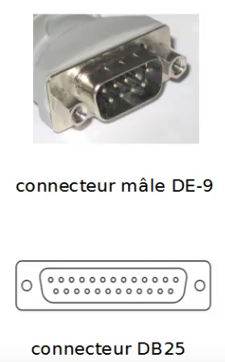
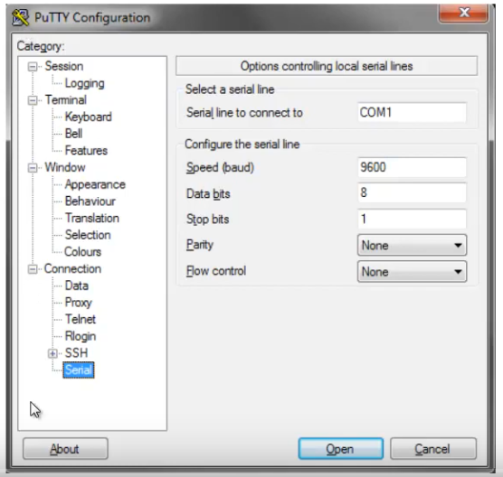

Switching : Première approche de la CLI Cisco IOS
Plan :
• Introduction
• Accéder à la CLI
◇ Port console
▪ Paramètres
◇ Telnet et SSH
▪ Se connecter via le réseau
- Putty
• Mode
◇ mode “utilisateur” et “privilégié”
◇ Configuration
• Abréviations
• Aide
• Raccourcis
Introduction
• CLI : Command Line Interface
◇ interface de configuration en ligne de commande
◇ l'administrateur rentre une commande
▪ appuyer sur Entrée envoi cette commande au switch, qui agi en conséquent
• IOS : internetwork Operating System
◇ Système d'exploitation pour la connexion des réseaux
◇ système d'exploitation de la plupart des équipements Cisco
◇ beaucoup de commandes vuses dans ce chapitre seront donc applicable aux routeurs
◇ utilise Tcl (Tool Command Language) pour la CLI et le scripting
Accéder à la CLI
• 3 méthode
◇ console
▪ port physique
◇ par le réseau IP
▪ telnet
▪ SSH
• Il est également possible d'utiliser un outil graphique
◇ Cisco Security Device Manager (SDM)
◇ ou son successeur Cisco Configuration Program (CCP)
Port console
• port RJ-45
◇ clairement indiqué ("console")
◇ connecté au PC via un câble UTP rollover
◇ via le port série (RS232 - DB25)
▪ il est possible d'utiliser un adapteur série-usb pour les PCs récents
▪ ou un câble RJ-45 to DE-9
- souvent désigné à tord comme port DN9
• nécessite un émulateur de terminal
◇ minicom : libre, pour les systèmes Unix
◇ teraterm : libre, pour Windows
▪ bonne alternative à Hyper-Terminal, supprimé de Windows à partir de Vista
◇ Putty : libre, très complet, compatile Window et Unix

Paramètres
• paramètres à respecter :
◇ 9600 bits/second
◇ aucun contrôle d flux matériel
◇ 8-bit ASCII
◇ pas de bit parité
◇ 1 bit stop
• Voir plus loin pour établir la connexion avec Putty

Telnet et SSH
• deux protocoles client-serveur
• telnet
◇ non sécurisé
▪ toute communication transmise en clair, mot de passe compris
◇ port TCP/UDP 23
• SSH (Secure Shell)
◇ sécurisé
▪ toute communication est authentifiée et chiffrée
◇ port TCP/UDP 22
Se connecter via le réseau
• nécessite un client telnet ou SSH
• clients basiques
◇ commande ssh (openssh-client) ou telnet des systèmes unix
◇ disponible via Cygwin sous Windows
• Putty
◇ client graphique complet
◇ SSH, Telnet, mais Rlogin, TCP brut et connexion directe
switch et routeur
Voir fichier gns3
config t # passer en mode privilégié
show run # voir la configuration
Modes
• Dans le terminal, les commandes seront interprétées suivant le “mode” actuel
• le prompt indiquera systématiquement le mode actuel
◇ example : en mode “configuration d'une ligne”
◇ switch(config-ligne)#
• nous verrons au fur et à mesure les commandes permettant des passer dans chaque “mode”
mode “utilisateur” et “privilégié”
• Par défaut, suite à de votre connexion, le mode “use EXEC” est utilisé
◇ ce qui implique qu'il est impossible d'effectuer des commandes néscessitant certains privilèges
▪ ex : redémarrer le switch grâce à la commande reload
◇ ceci est indiqué par le prompt “>”
• Pour exécuter ces commandes, il vous faudra passer en mode “privilégié”
◇ “Enable mode”, “privileged mode” ou encore “privileged EXEC mode”
◇ grâce à la commande enable
▪ nécessite un mot de passe
◇ indiqué par le prompt “#”
Configuration
• pour modifier le mode de passe du mode enable :
• #enable secret password
◇ en l'absence de ce mot de passe, il est impossible de passer en mode “privilégié” via une connexion telnet ou SSH.
Abréviations
• il est possible d'abréger chaque commande
◇ afin de gagner du temps
◇ cependant, il sera bien entendu impossible de les abréger au dla d'une certaine limite
▪ pour évité toute ambiguïté
• Exemple
◇ la commande enable pourra être abrégée en “en” mais pas en “e”
• la plupart du temps, les commandes seront écrites complètement dans ce cours
◇ mais, une fois celles-ci présentées, elles pourront être utilisée sous leur forme abrégées
Aide
Commande Description
? liste et rapide description des commandes disponibles dans le mode actuel
help rapide présentation des manières d'obtenir de l'aide
command ? liste des premiers paramètres disponibles pour la commande avec leur description
com? liste des commandes commençant par “com”
command parm? liste des paramètres commençant par “parm”
command parm<tab> complète la commande si il n'existe qu'une possibilitée
command parm1 ? liste les paramètres suivants disponibles
Raccourcis
Raccourci Action
flèche haut ou Ctrl-p remonte d'une commande dans l'historique
flèche bas ou Ctrl-n redescend d'une commande dans l'historique
flèche gauche ou Ctrl-b déplacer la curseur vers la gauche
flèche droite ou Ctrl-f déplacer le curseur vers la droite
Backspace supprimer le caractère à gauche du curseur
Ctrl-a déplacer le curseur en début de ligne
Ctrl-e déplacer le curseur en fin de ligne
Ctrl-r ré-afficher la ligne de commande et tout ses caractères (très utile quand un message encombre l'affichage)
Ctrl-d supprimer le carctère sous le curseur
Esc-b se déplacer d'un mot vers la gauche
Esc-f se déplacer d'un mot vers la droite
Ce qu'on a couvert
• Effectuer une première approche de la CLI Cisco IOS
◇ savoir comment s'y connecter
▪ via la console
▪ ou via le réseau
◇ comprendre cette interface
▪ prompt et modes
▪ abréviations
◇ comprendre le système de configuration
▪ running et startup-config